Data-Level Parallelism¶
本章主要介绍三部分内容，它们都是 SIMD (single instruction multiple data) 的变体：
- 向量架构(vector architecture)
- 多媒体 SIMD 指令集扩展(multimedia SIMD instruction set extensions)
- 图形处理器(graphic processing units, GPUs)
4.1 Vector Architecture¶
1. RV64V Extension¶
向量架构的原理：
- 获取分散在内存中的数据元素集，将它们放在一个较大的顺序寄存器堆内，在寄存器堆上对数据进行操作，最后将结果分散放回到内存中。
- 单条指令作用在向量数据上，导致在独立的数据元素上有多个寄存器 - 寄存器运算
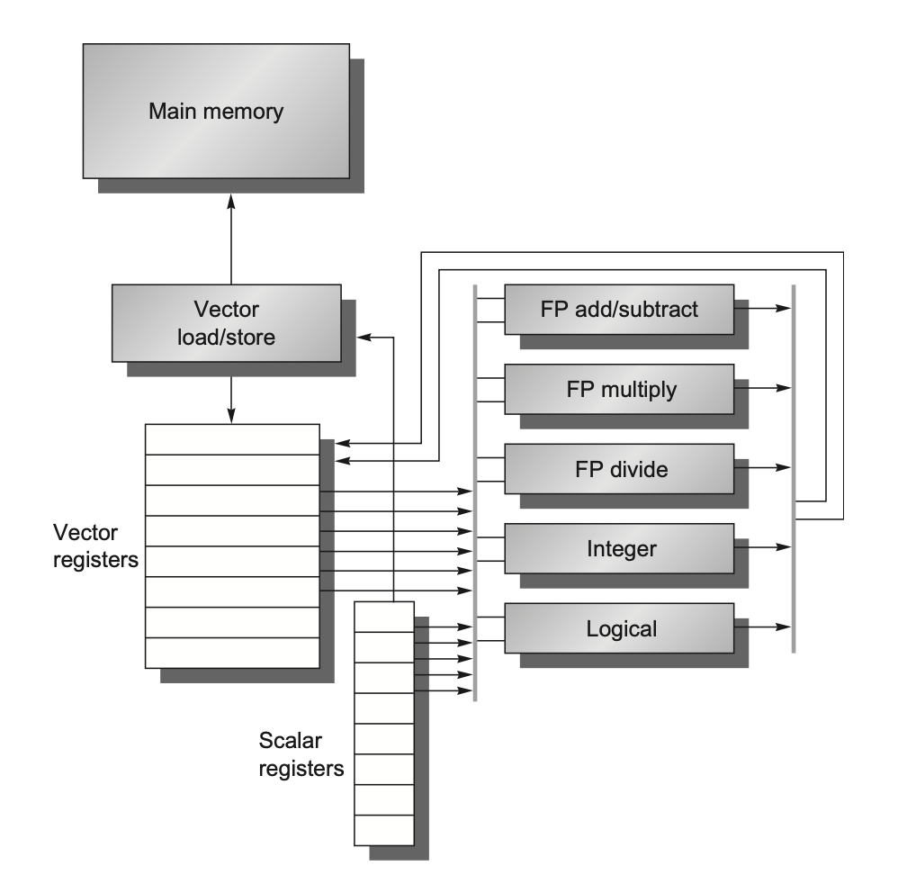
- 向量寄存器(vector registers)：
- RV64V 有 \(32\) 个向量寄存器，每个向量寄存器的大小为 \(64\) 位，保存一个向量
- 向量寄存器堆需要提供足够量的端口，以供给向量功能单元；
这些端口允许不同向量寄存器的向量运算间的高度重叠
- 向量寄存器堆需要提供足够量的端口，以供给向量功能单元；
- 至少有 \(16\) 个读端口和 \(8\) 个写端口，通过一堆纵横开关和功能单元相连
- 提升寄存器堆带宽的一个方法是使用多分区(multiple banks)
- RV64V 有 \(32\) 个向量寄存器，每个向量寄存器的大小为 \(64\) 位，保存一个向量
- 向量功能单元(vector functional units)：
- 所有单元都是完全流水线化的，并且每个时钟周期都可以开始一条新的指令
- 如果一条向量是 \(n\) 位的，就需要 \(n\) 个 cycle 的时间处理
- 控制单元用于检测冒险，包括功能单元的结构冒险和寄存器访问的数据冒险
- 所有单元都是完全流水线化的，并且每个时钟周期都可以开始一条新的指令
- 向量加载 / 存储单元(vector load/store unit)：
- 完全流水线化，这样能保证在初始时延后，每个时钟周期的带宽为一个字
- 它们也能用于处理标量的加载和存储
- 标量寄存器组(a set of scalar registers)：
- 它们主要提供数据和计算好的地址
- 在 RV64V 中，有 \(31\) 个通用目的寄存器，以及 \(32\) 个浮点数寄存器
RV64V 向量指令
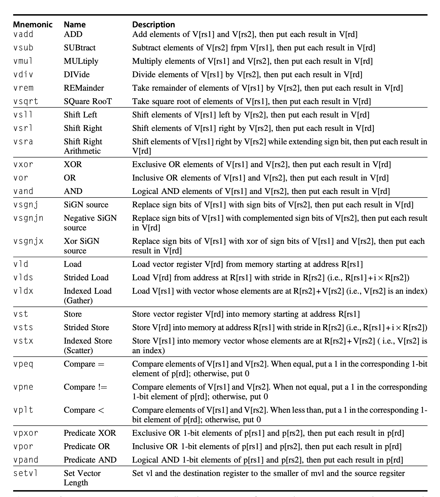
Dynamic Register Typing¶
Dynamic Register Typing（动态寄存器类型）其核心是：
- 寄存器的数据类型和元素宽度不直接编码在指令中，而是在程序运行时动态配置。
在执行向量指令之前，程序会先配置向量寄存器的：
- 数据类型（整数 / 浮点数）；元素宽度（8/16/32/64 bit）；向量长度
- 随后，同一条向量指令即可适用于不同的数据格式：
- 配置为
int32时，vadd表示整数加法 - 配置为
float64时，vadd表示双精度浮点加法
- 配置为
向量处理器允许程序“关闭”未使用的向量寄存器，并将存储空间分配给正在使用的寄存器
- 例如：系统共有 \(1024 \text{ bytes}\) 的向量寄存器存储空间
如果程序只启用 \(4\) 个向量寄存器，则每个寄存器可分配：\(1024 / 4 = 256 \text{ bytes}\) - 这意味着使用的寄存器数量越少，每个寄存器能够容纳的向量长度（MVL, Maximum Vector Length）越大
Code Examples¶
DAXPY Example
-
Double precision:
\[ Y=aX+Y \]- \(X\) and \(Y\) have 32 elements
- \(x_5\) and \(x_6\) hold the starting address of \(X\) and \(Y\), respectively
-
Here is the RISC-V code:
- 标量代码需要显式循环，每次处理一个元素
fld f0,a # Load scalar a
addi x28,x5,#256 # Last address to load
Loop:
fld f1,0(x5) # Load X[i]
fmul.d f1,f1,f0 # a × X[i]
fld f2,0(x6) # Load Y[i]
fadd.d f2,f2,f1 # a × X[i] + Y[i]
fsd f2,0(x6) # Store into Y[i]
addi x5,x5,#8 # Increment index to X
addi x6,x6,#8 # Increment index to Y
bne x28,x5,Loop # Check if done
- Here is the RV64V code for DAXPY:
- 向量版本一次处理整段 vector
vsetdcfg 4*FP64 # Enable 4 DP FP vector registers
fld f0,a # Load scalar a
vld v0,x5 # Load vector X
vmul v1,v0,f0 # Vector-scalar multiply
vld v2,x6 # Load vector Y
vadd v3,v1,v2 # Vector-vector add
vst v3,x6 # Store the sum
vdisable # Disable vector registers
为什么向量版本快
- 没有 loop-carried dependence
- dependences between iterations of a loop
- 循环控制开销大幅减少
- 每条向量指令只需要为第一个元素承担 stall / startup
- 后续元素可以沿着流水线连续流动
Vector Chaining
当一个 vector operation 产生某个元素的结果后，依赖它的下一条 vector operation 可以立刻使用这个元素，而不用等整条向量全部计算完。
Flexible chaining 允许一条 vector instruction 与几乎任意 active vector instruction 链接，而不只限于固定功能单元之间的 forwarding。
vmul v1, v0, f0
vadd v3, v1, v2
vadd不必等vmul完成所有元素，只要v1[0]可用，就可以开始处理v3[0]。- 这类似 forwarding，但粒度是 vector element。
2. Vector Execution Time¶
分析向量执行时间时，需要关注：
- operand vector length：向量寄存器中元素个数，决定了每条向量指令的执行周期数
- vector unit initiation rate：向量功能单元的启动频率（通常每周期接受一个新向量元素）
- structural hazards
- data hazards
Convoy and Chime¶
Convoy：一组可以同时开始执行的 vector instructions
- 把一段向量指令序列划分成若干 convoy，划分规则：
- 同一个 convoy 内不允许有 structural hazard
- RAW 可以存在，因为向量指令之间可以通过 chaining 处理
Chime：执行一个 convoy 所需的时间，记为 1 chime
- 如果一个 vector sequence 有 \(m\) 个 convoys，则需要 \(m\) 个 chimes。
- 若向量长度为 \(n\)，并忽略 issue overhead 和 startup time，则近似执行时间：
Warning
属于不同 convoy 的指令之间必须串行执行。 Cross-convoy instructions are serialized
Example: DAXPY Convoys¶
DAXPY 的向量指令序列：
vld v0, x5 # Load vector X
vmul v1, v0, f0 # Vector-scalar multiply
vld v2, x6 # Load vector Y
vadd v3, v1, v2 # Vector-vector add
vst v3, x6 # Store the sum
假设每种 vector functional unit 只有一个，则存在如下结构冲突：
vld和vld不能放在同一个 convoyvld和vst也不能同时使用同一个 load/store unit
因此上述指令可以分成 3 个 convoys：
vld v0, x5+vmul v1, v0, f0(v0 dependence)vld v2, x6+vadd v3, v1, v2(v2 dependence)vst v3, x6
假设向量长度为 32，时间开销如下：
DAXPY 中每个元素有 2 个 FLOPs（multiply 和 add），浮点运算数如下：
Cycles per FLOP，用于衡量计算效率的指标如下：
3. Optimizing Vector Architecture¶
Multiple Lanes¶
通过使用多个功能单元来提升向量运算性能，每个周期处理多个元素
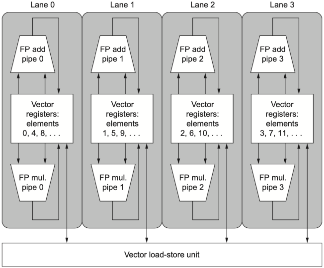
如果有 \(L\) 条 lanes，理想情况下：\(\text{time per convoy}\approx \dfrac{n}{L}\)
其核心做法是：
- vector register memory 被分散到多条 lanes
- 每条 lane 负责一部分 vector elements
- 多个功能单元并行处理不同元素
Note
lane 数越多，吞吐率越高，但寄存器文件端口、交叉开关、内存带宽压力也更大。
Vector-Length Register¶
现实程序中，向量长度常常在编译时未知。
Vector-length register (vl) 用来控制当前 vector instruction 实际处理多少元素
- 约束：The value in
vlcannot be greater than the maximum vector length (mvl)
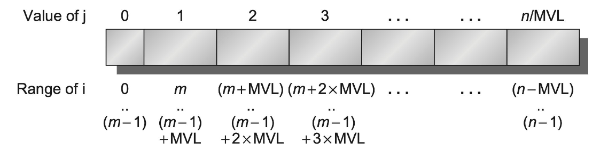
向量寄存器有长度限制，当处理的向量长度超过了 MVL 时，采用Strip Mining（分条开采）
- 把循环拆成两层：
- 外层循环：每次处理 \(\min(\text{mvl, 剩余元素数})\) 个元素
- 内层循环：处理剩下的这些元素
RISC-V 指令 setvl：
- \(n\)：剩余待处理的元素数（循环变量）；\(\text{mvl}\)：硬件最大向量长度
- 这条指令会把实际设置的 \(\text{vl}\) 值写入通用寄存器 \(t_0\)，方便后续指针移动和循环控制
Example
任意长度 DAXPY 的 RV64V 代码框架：
vsetdcfg 2*FP64 # Enable 2 64-bit FP vector registers
fld f0, a # Load scalar a
loop:
setvl t0, a0 # vl = t0 = min(mvl, n)，a0 为向量的元素数量 n
vld v0, x5 # Load vector X segment
slli t1, t0, 3 # t1 = vl * 8 bytes， 每个元素 8 byte
add x5, x5, t1 # Move X pointer
vmul v0, v0, f0 # a * X
vld v1, x6 # Load vector Y segment
vadd v1, v0, v1 # a * X + Y
sub a0, a0, t0 # n -= vl
vst v1, x6 # Store result to Y
add x6, x6, t1 # Move Y pointer
bnez a0, loop # Continue if n != 0
vdisable
Predicate Registers¶
循环中常常有 if，如果直接分支会破坏向量化，例如：
for (i = 0; i < 64; i++)
if (X[i] != 0)
X[i] = X[i] - Y[i];
解决方法：用 predicate register（谓词寄存器） 实现条件执行，而不是分支
Predicate Register
Predicate register 是一个位向量（bit vector），每个 bit 对应向量中的一个元素位置
- mask bit = 1：对应元素参与运算
- mask bit = 0：对应元素不参与运算，目标寄存器中该元素保持不变
Predicate Register p0: [1, 0, 1, 1, 0, 1, 0, 1]
↑ ↑ ↑ ↑ ↑ ↑ ↑ ↑
元素位置: 0 1 2 3 4 5 6 7
三条核心规则
- 设置 Predicate Register 后，后续向量指令只操作 mask = 1 的元素
- mask = 0 对应的目标元素不受影响
- 启用 Predicate Register 时，初始化为全 1
我们称这种扩展能力为向量掩码控制(vector-mask control)，而编译器设计者则将其称为 IF- 转换(IF-conversion)，也就是编译器把分支转换成直线向量代码。
Example
原始形式：
for (i = 0; i < n; i++) {
if (X[i] != 0) {
Y[i] = a * X[i] + Y[i];
}
}
向量化思想：
vsetdcfg 2*FP64 # 启用 2 个 64 位浮点向量寄存器
vsetpcfgi 1 # 启用 1 个谓词寄存器
vld v0,x5 # 将向量 X 加载到 v0
vld v1,x6 # 将向量 Y 加载到 v1
fmv.d.x f0,x0 # 将（浮点）零放入 f0
vpne p0,v0,f0 # 如果 v0(i) != f0，则将 p0(i) 设为 1
vsub v0,v0,v1 # 在向量掩码下执行减法
vst v0,x5 # 将结果存储到 X
vdisable # 禁用向量寄存器
vpdisable # 禁用谓词寄存器
- 这里的
vpne是进行比较，如果两个值相同就把目标寄存器的值赋为 1，反之为 0
Memory Banks¶
向量机的性能很大程度取决于内存系统。向量 load/store 需要连续、高带宽、可流水的内存访问
多个 memory banks 的作用：
- 支持多个 load/store 同时访问（单个内存 bank 的周期时间通常是处理器周期时间的好几倍）
- 支持非连续数据访问
- 让多个处理器共享内存系统时仍能提供高带宽
向量处理器
- Cray T90
- 32 个 processors，每个 processor 每周期 4 loads + 2 stores
- processor cycle time = 2.167 ns（处理器一个时钟周期的时间）
- SRAM cycle time = 15 ns（一次完整的内存读写的时间）
- 所有 processors 每周期最多引用：\((4+2)\times32=192\)
- 每个时钟周期，系统中最多有192 个同时发出的内存访问请求
- SRAM bank 忙碌时间按 processor cycles 计：
- 要让每周期的 192 个请求都不被阻塞，最少 banks：\(192\times7=1344\)
Stride¶
Stride（步长）= 向量中相邻两个元素在内存中的地址间隔
- Unit stride：stride = 1，相邻元素连续存
- Nonunit stride：stride > 1，相邻元素间隔访问
很多在向量中相邻元素在内存中的地址不一定连续
for (int i = 0; i < 100; i++)
for ( int j = 0; j < 100; j++) {
A[i][j] = 0.0;
for (int k = 0; k < 100; k++)
A[i][j] = A[i][j] + B[i][k] * D[k][j];
}
- 假设按行优先存储（row-major order），
访问 \(D\) 数组中相邻元素时，地址间隔为：行大小 × 8（每个元素的字节数）
向量指令：
VLDS Vd, Rs, stride(load vector with stride)：从内存中按指定步长读取向量到向量寄存器- Vd = 目标向量寄存器, Rs = 基地址, stride = 步长（字节）
VSTS Vs, Rs, stride(store vector with stride)：从向量寄存器按指定步长写回内存
# 设 Rs = &D[0][3]（第 3 列首元素地址）, stride = 200 × 8 = 1600 字节（一行的字节数）
VLDS V0, Rs, 1600 # 读取 D[0][3], D[1][3], D[2][3], ... 到 V0
VLTS V1, Rs, 1600 # 写入 D[0][3], D[1][3], D[2][3], ... 到 V1
Example
- 8 memory banks
- bank busy time = 6 cycles
- total memory latency = 12 cycles
** If vector length = 64, Stride = 1**
- 8 个 bank 编号 0~7，连续访问依次命中，由于 bank 的数量大于 busy time ，因此永远不会冲突。流水线完全启动后，每周期返回 1 个元素。总时间：\(12+64=76\text{ cycles}\)
If Stride = 32
- 访问序列和 bank 的映射：
- 元素地址: 0, 32, 64, 96, ...
- bank = address % 8: \(0\%8=0, 32\%8=0, 64\%8=0, 96\%8=0\)，全部命中 bank 0！
- 每次访问都落到 bank 0，从第二次访问开始冲突。总时间：\(12+1+6\times63=391\text{ cycles}\)
Bank Conflict
当连续访问落到同一个 busy bank 上，就会发生 bank conflict
若上式成立，则会发生 bank conflict。
Gather-Scatter¶
稀疏矩阵或稀疏向量中，非零元素不连续，需要 index vector 指定元素位置。
- Gather：把非零元素"收集"到连续寄存器
根据 base address 和 index vector 中的 offsets 计算地址，从内存中取出分散的元素，并将其放到 dense vector register 中 - Scatter：把结果放回稀疏结构在内存中的正确位置
将 dense vector register 中的结果根据 index vector 分散写回内存
向量指令： VLDX Vd, Rs, Vi：indexed vector load / gather，instruction to load vector indexed or gatherVSTX Vs, Rs, Vi：indexed vector store / scatter，instruction to store vector indexed or scatter
Example
原始形式：
for (i = 0; i < n; i++)
A[K[i]] = A[K[i]] + C[M[i]];
向量化思想：
vsetdcfg 4*FP64 # 4 个 64 位浮点向量寄存器
vld v0, x7 # 加载 K[]
vldx v1, x5, v0 # 加载 A[K[]]
vld v2, x28 # 加载 M[]
vldx v3, x6, v2 # 加载 C[M[]]
vadd v1, v1, v3 # 将它们相加
vstx v1, x5, v0 # 存储 A[K[]]
vdisable # 禁用向量寄存器
- 这里的 x5, x6 对应 A, C；x7, x28 对应 K, M
4.2 Multimedia SIMD¶
Multimedia SIMD 可以看作“固定宽度的小型向量处理”，更适合较短、固定长度的数据并行操作。它的想法是把多个较小的数据元素打包进一个宽寄存器中，然后用一条指令对这些元素执行同一种操作。
和向量处理器相比，Multimedia SIMD 省略了以下机制：
- vector length register：不能像
vl那样动态指定本次向量指令实际处理多少元素； - strided / gather-scatter transfer instructions：对非连续访问和稀疏访问的支持较弱；
- mask registers：传统 multimedia SIMD 不能像向量架构那样自然地对每个元素做条件执行。
因此，在使用 Multimedia SIMD 时，程序员或编译器通常需要把循环拆成固定宽度的小块。例如 256-bit SIMD 每次处理 4 个 double，那么主循环每次前进 4 个元素；如果数组长度不是 4 的整数倍，尾部剩余元素需要单独处理。
RISC-V SIMD code for DAXPY
fld f0, a # Load scalar a
splat.4D f0, f0. # Make 4 copies of a
addi x28, x5, #256 # Last address to load
Loop: fld.4D f1, 0(x5) # Load X[i] ... X[i+3]
fmul.4D f1, f1, f0 # a×X[i] ... a×X[i+3]
fld.4D f2, 0(x6) # Load Y[i] ... Y[i+3]
fadd.4D f2, f2, f1 # a×X[i]+Y[i]...
# a×X[i+3]+Y[i+3]
fsd.4D f2, 0(x6). # Store Y[i]... Y[i+3]
addi x5, x5, #32 # Increment index to X
addi x6, x6, #32 # Increment index to Y
bne x28, x5, Loop # Check if done
- \(256\) -bit 宽的 SIMD 指令，如果操作数是 double precision，那么每个元素为 \(64\) bit，一条指令一次可以处理 \(4\) 个 double precision 元素。
.4D的含义：一条 SIMD 指令同时作用在 \(4\) 个 DP operands 上
Roofline Visual Performance Model¶
一种的直观比较 SIMD 架构变体的潜在浮点性能的可视化方法是屋顶线模型(Roofline model)。它用二维图形表示 浮点数性能（floating-point performance）、内存性能（memory performance） 以及 算术强度（arithmetic intensity） 之间的关系。
Arithmetic Intensity
算数强度（Arithmetic intensity） 定义为：
它表示每访问 \(1\) byte 内存，程序平均能做多少次浮点运算。这个值越高，说明数据被读入后能被复用得越充分；这个值越低，说明程序大部分时间可能都花在搬数据上。
Roofline 的基本性能上界可以写成：
- 算数强度较低时，\(\text{Memory Bandwidth}\times\text{Arithmetic Intensity}\) 是主要限制，程序是 memory-bound
- 算数强度足够高时，接近处理器的 peak FP performance，此时更偏 compute-bound
Roofline 的判断方法
- 如果程序落在斜线区域，说明内存带宽是主要瓶颈，应优先提高数据局部性、减少内存访问、增加数据复用。
- 如果程序落在水平屋顶附近，说明计算单元已经成为主要瓶颈，应考虑提高 SIMD/GPU 利用率。
- 还可以用 Stream benchmark 测量 peak memory performance
下图展示了 GFLOP/s 与 roofline 的关系
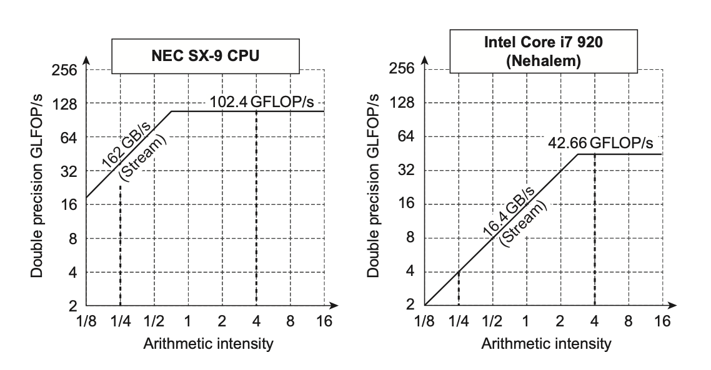
考虑模型中斜线上升段和水平平台段的汇聚点：
- 如果在很右侧的位置上，那么只有少数具备高算术强度的内核才能达到计算机的最大性能
- 如果在很左侧的位置上，那么几乎所有内核都能达到最大性能
向量处理器相比其他 SIMD 处理器而言，同时具备较高的内存带宽，以及靠左的汇聚点。
4.3 GPU¶
GPU 支持多种形式的并行，包括 multithreading、MIMD、SIMD 和 ILP。
- GPU 不只是“很多 ALU”，而是一套围绕大量线程和 SIMD 化执行组织起来的并行系统。
GPU 编程的难点不仅在于让 GPU kernel 本身跑得快，还在于协调：
- system processor 和 GPU 之间的计算调度；
- system memory 和 GPU memory 之间的数据传输；
- 线程、线程块和硬件 SIMD 处理器之间的映射关系。
1. NVIDIA CUDA¶
CUDA（Compute Unified Device Architecture） 程序分为两侧：
- host：运行在 system processor 上，使用 C/C++
- device：运行在 GPU 上，使用 CUDA C/C++ 方言
CUDA 通过 CUDA Threads 实现并行性，其执行模型称为 SIMT（Single Instruction, Multiple Thread）。程序员编写大量线程，硬件自动将线程按 Warp（32 个线程） 为单位分组，同一 Warp 内的所有线程同步执行同一条指令，本质上是 SIMD 操作。
CUDA Function Declaration
| 关键字 | 含义 |
|---|---|
__host__ |
host 端函数，在 CPU 上执行 |
__device__ |
device 端函数，在 GPU 上执行 |
__global__ |
GPU kernel，由 host 调用、在 device 上执行 |
如果变量用 __device__ 声明，它会被分配在 GPU memory 中，并且可以被所有 multithreaded SIMD processors 访问。
GPU function call 的形式为：
name<<<dimGrid, dimBlock>>>(parameter_list);
其中：
dimGrid表示 grid 的维度，单位是 thread blocks；dimBlock表示 block 的维度，单位是 threads；blockIdx表示当前 block 的编号；threadIdx表示当前 thread 在 block 内的编号；blockDim表示每个 block 中的 thread 数量，来自dimBlock
这些变量共同决定一个 thread 要处理哪一个数据元素。
DAXPY in CUDA
假设使用每个 thread block 有 \(256\) 个 threads
Host 端代码先根据向量长度 \(n\) 计算需要多少个 blocks：
// Invoke DAXPY with 256 threads per Thread Block
__host__
int nblocks = (n + 255) / 256;
daxpy<<<nblocks, 256>>>(n, 2.0, x, y);
GPU kernel 如下：
// DAXPY in CUDA
__global__
void daxpy(int n, double a, double *x, double *y) {
int i = blockIdx.x * blockDim.x + threadIdx.x;
if (i < n) y[i] = a * x[i] + y[i];
}
每个 thread 通过下面的式子计算自己负责的元素编号：
Thread Block 的独立性
为简化硬件调度，CUDA 要求线程块能够以任意顺序独立执行。规定不同的线程块之间不得直接通信。因此，CUDA 程序不能依赖不同 blocks 的执行顺序，也不能假设 block 之间能直接同步。
2. GPU Micro-architectural Features¶
GPU 的一些术语
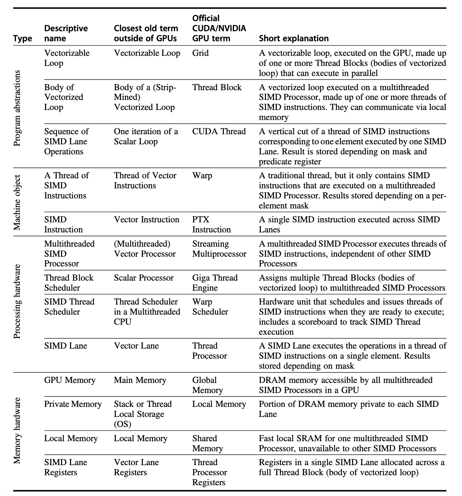
下面用一个 \(A=B\times C\) 的向量乘法例子说明 CUDA 的层级结构：
- vector multiply；
- \(8192\) elements；
- 每个 thread 处理 \(32\) 个 elements；
- 每个 block 有 \(16\) 个 threads；
- 一共有 \(16\) 个 blocks。
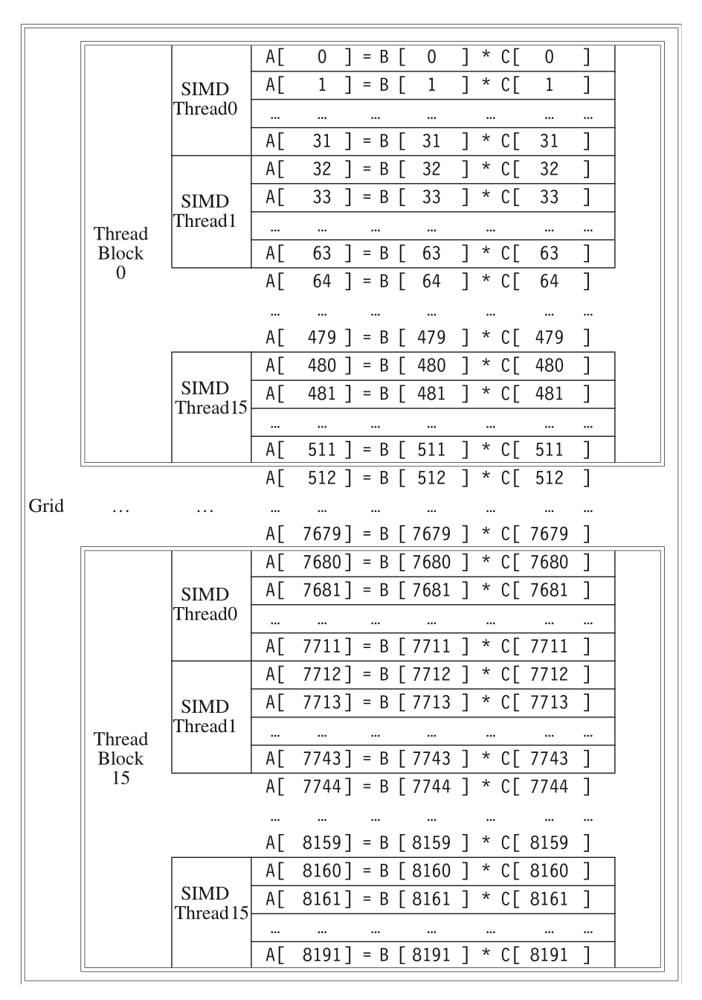
总共处理的元素数为：
这个例子想表达的是：GPU 程序不是只把一个元素交给一个 thread，也可以让一个 thread 处理一小段连续元素；而 thread、block、grid 的层级决定了工作如何被组织和调度。
Multithreaded SIMD Processor¶
下图展示了一个简化的多线程 SIMD 处理器框图：
- 图中的例子包含 \(16\) 条 SIMD lanes
- 而 Pascal P 100 GPU 有 \(56\) 个 Multithreaded SIMD Processor
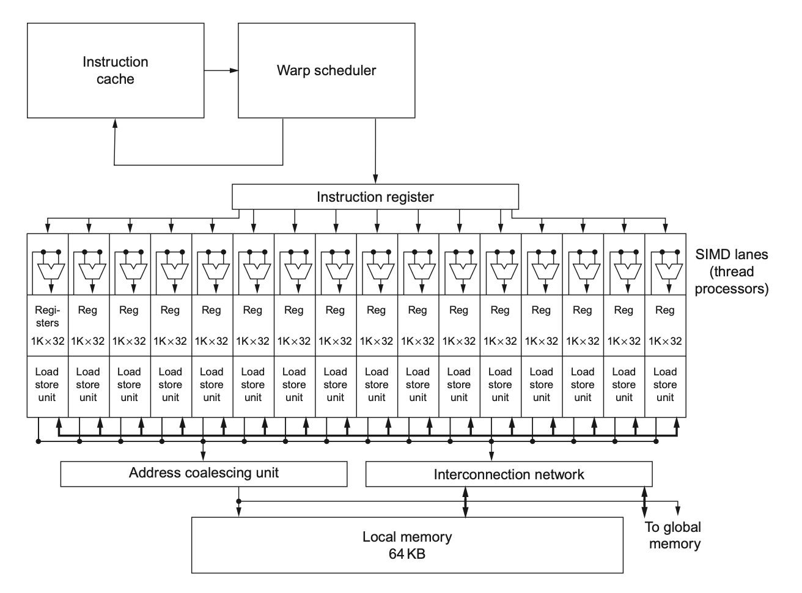
可以这样理解：
- SIMD lanes 是真正执行 SIMD 指令的并行执行通道；
- Multithreaded SIMD Processor 负责管理和执行一组线程；
- GPU 通过大量这样的处理器来支持大规模数据并行。
SIMD Thread Scheduler¶
现代 GPU 通常采用两级调度机制：
- 线程块调度器（Thread Block Scheduler）：把 thread blocks 分配给 multithreaded SIMD processors 执行
- SIMD 线程调度器（SIMD Thread Scheduler）：在一个 SIMD processor 内部，决定哪些 SIMD instructions 现在可以运行
3. NVIDIA GPU ISA: PTX¶
PTX (Parallel Thread Execution) 是 NVIDIA GPU 的一种稳定指令集接口
- 给编译器提供稳定目标；
- 在不同 GPU 代际之间保持兼容；
- 程序加载时PTX 会被翻译成GPU 的内部语言
PTX 指令格式为：
opcode.type d, a, b, c
d是 destination operand，对非 store 指令是 registers，对 store 指令是 memory addressa, b, c是 source operands，可以是 \(32\) -bit / \(64\) -bit registers 或 constant
PTX 指令集
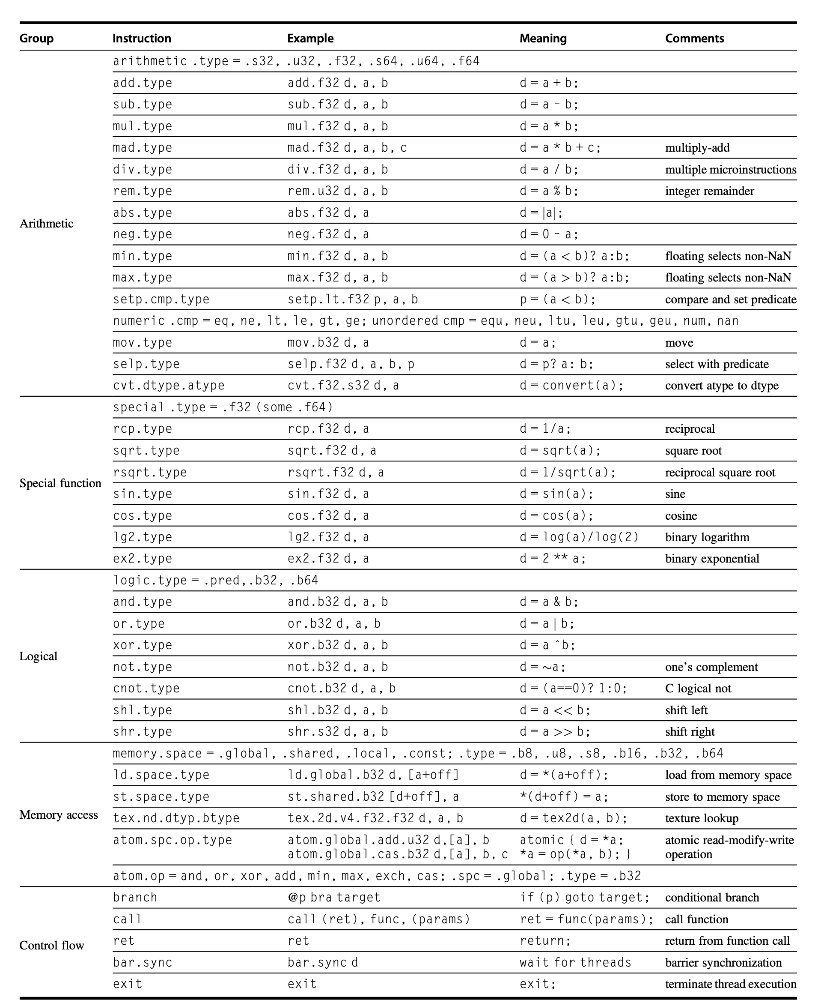
DAXPY in PTX
shl.u32 R8, blockIdx, 8 ; Thread Block ID * Block size
; 256 = 2^8
add.u32 R8, R8, threadIdx ; R8 = i = my CUDA Thread ID
shl.u32 R8, R8, 3 ; byte offset
ld.global.f64 RD0, [X + R8] ; RD0 = X[i]
ld.global.f64 RD2, [Y + R8] ; RD2 = Y[i]
mul.f64 RD0, RD0, RD4 ; RD0 = RD0 * RD4, scalar a in RD4
add.f64 RD0, RD0, RD2 ; RD0 = RD0 + RD2
st.global.f64 [Y + R8], RD0 ; Y[i] = a * X[i] + Y[i]
这段代码和 CUDA kernel 的对应关系很直接：
- 第一条
shl.u32把blockIdx乘以 \(256\)，得到当前 block 起始 thread 编号； add.u32加上threadIdx，得到全局线程编号 \(i\)；- 第二条
shl.u32把 \(i\) 乘以 \(8\)，因为 double precision 每个元素是 \(8\) bytes； - 两条
ld.global.f64从 global memory 中读取X[i]和Y[i]； mul.f64和add.f64完成 DAXPY 的浮点计算；st.global.f64把结果写回Y[i]。
4. Conditional Branch¶
GPU 的条件分支是 DLP 架构中的一个重要难点，GPU branch hardware 包括：
- predicate registers（谓词寄存器）
- internal masks（内部掩码）
- branch synchronization stack（分支同步栈）
- instruction markers（指令标记）
Predicate Register¶
- 在底层的 PTX 层面，程序员或编译器会显式使用 predicate register来控制指令执行
- 逐线程控制：在一个 Warp（通常包含 32 个线程）中，每个线程都有独立的谓词状态
- 谓词寄存器非常小，只有1-bit
- 设置谓词的指令是：
setp（"Set Predicate"）
setp.gt.s32 p, a, b
这条指令的意思是：如果整数 \(a\) 大于 \(b\)，则将谓词寄存器 \(p\) 设为 1（True），否则设为 0（False）。这个 \(p\) 随后会被后续的算术或逻辑指令引用，决定它们是否执行。
当代码中出现 if-else 结构时，GPU 利用谓词寄存器运行代码的过程如下：
- 处理 THEN 分支（即条件成立的部分）
- GPU 是 SIMD 架构，控制器只会发出一条指令并广播发送给 Warp 中的所有通道
- 虽然指令广播给了所有通道，但只有谓词为1的通道（Lane）才会工作
- 处理 Else 分支：逻辑正好相反
- 之前在
THEN部分活跃的线程（谓词=1），在ELSE部分会被屏蔽 - 之前在
THEN部分休眠的线程（谓词=0），在ELSE部分会被激活
- 之前在
分支发散的效率损失
如果 THEN 和 ELSE 路径长度相同，那么一次 IF-THEN-ELSE 的执行效率可能只有 \(50\%\) 或更低。如果是两层嵌套 IF，并且路径长度相近，效率可能下降到 \(25\%\)。这是因为不同 lanes 走不同路径时，SIMD 硬件需要分批执行这些路径。
Branch Synchronization Stack¶
对于复杂控制流，仅靠 predicate register 不够，下面介绍分支同步栈。
- 在 GPU 的 SIMT 架构中，当线程组遇到分支时，硬件需要记住当前的执行状态，以便在处理完一个分支后能正确恢复并处理另一个分支。这就是分支同步栈的作用。
每个 SIMD 线程组（Warp）都有自己独立的栈，当这个 Warp 遇到分支语句时，硬件会为它分配一个专门的栈空间来记录当前的上下文。
- 当分支发生时，硬件会将 stack entry（包含三个关键信息）压入栈中：
- identifier token（标识符令牌）：用于标记这次分支操作的ID
- target instruction address（目标指令地址）：记录分支结束后的汇合点
- target thread-active mask（目标线程活跃掩码）：记录在进入分支之前活跃的线程
- 关于栈的具体操作
- Push：GPU执行到分支指令时，会把当前的“活跃线程掩码”和“返回地址”作为一个 entry推入该Warp对应的分支同步栈中
- Pop / Unwind：
- Pop a stack entry：取出栈顶信息
- Branch to the target instruction address：根据栈里存的地址，跳转到汇合点
- With the target thread-active mask：硬件会根据栈里保存的掩码，重新激活那些之前被“屏蔽”掉的线程
- 这种机制保证了 GPU 虽然采用单指令多线程（SIMT）模式，却能支持复杂的串行逻辑代码（如深层嵌套的 if-else），而不会导致线程死锁或状态丢失。
Example of Conditional Statement
C 代码
if (X[i] != 0)
X[i] = X[i] - Y[i];
else
X[i] = Z[i];
PTX 指令实现 (PTX Instructions)
ld.global.f64 RD0, [X+R8] ; RD0 = X[i]
setp.neq.s32 P1, RD0, #0 ; P1 is predicate reg 1 (结果存入谓词寄存器 P1)
@!P1, bra ELSE1, *Push ; Push old mask, set new
; mask bits if P1 false, go to ELSE1
ld.global.f64 RD2, [Y+R8] ; RD2 = Y[i] (加载 Y[i])
sub.f64 RD0, RD0, RD2 ; Difference in RD0 (计算 RD0 - RD2])
st.global.f64 [X+R8], RD0 ; X[i] = RD0 (将结果存回 X[i])
@P1, bra ENDIF1, *Comp ; complement mask bits
; if P1 true, go to ENDIF1
ELSE1: ld.global.f64 RD0, [Z+R8] ; RD0 = Z[i] (ELSE 分支开始：加载 Z[i])
st.global.f64 [X+R8], RD0 ; X[i] = RD0 (将 Z[i] 的值赋给 X[i])
ENDIF1: <next instruction>, *Pop ; pop to restore old mask
5. GPU Memory¶
英伟达 GPU 的内存结构图如下：
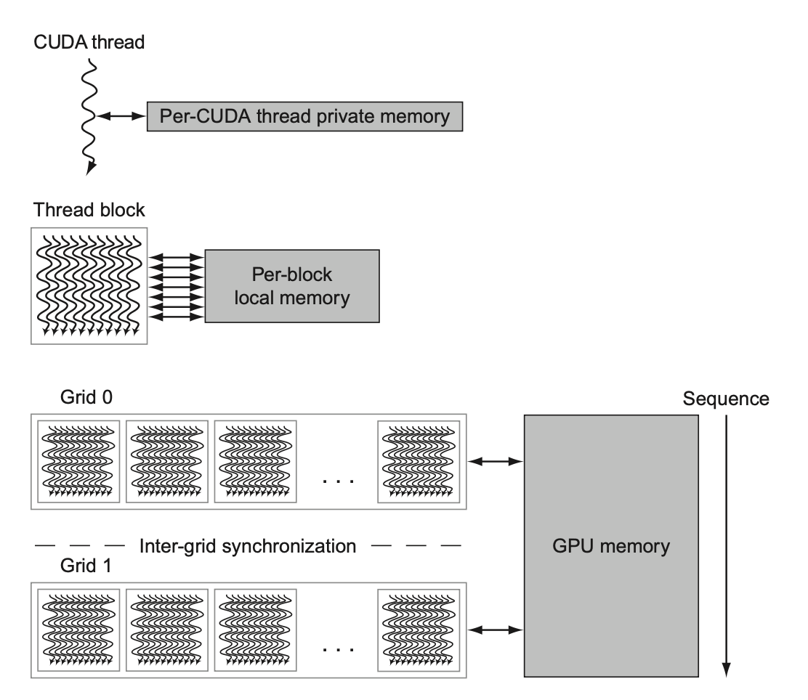
GPU 的内存可划分为三个层级：
- 私有内存(private memory)
- 位于芯片外的 DRAM，每个 SIMD 通道（即每个线程）独有，不会共享私有内存
- 用于存放栈帧 (stack frame)、溢出寄存器和无法被寄存器容纳的私有变量
- 虽然 DRAM 速度很慢，但 GPU 会用 L 1 和 L2 Cache 对其进行缓存从而提升性能
- 局部内存(local memory)
- 芯片上，位于每个多线程 SIMD 处理器内部（通常指 Shared Memory）
- 低时延，高带宽，容量不大（一般只有 48 KB）
- 块内共享：同一个线程块内的所有线程可以共享这块内存
- 块间隔离：不同的线程块之间无法访问对方的局部内存
- 主机不可见：CPU（主机）无法直接读写这部分内存
- GPU 内存(GPU Memory)
- 芯片外的 DRAM（即全局显存）
- 全局共享，CPU 可以将数据写入这里供 GPU 读取，也可以读取 GPU 的计算结果
Abstract
- CPU 使用巨大的 L2/L3 缓存来减少访问内存的次数，但这占据了大量的芯片面积。
- GPU 不依赖大缓存，而是采用较小的流式缓存。
- 利用大规模并行性隐藏延迟：GPU 处理的数据量往往高达数百 MB，远超缓存容量，缓存命中率并不理想。当一组线程在等待 DRAM 数据时，GPU 会立即切换去执行另一组已经准备好数据的线程。只要线程数量足够多，计算单元就永远不会空闲。
- 资源置换：原本用作缓存的芯片面积，被用来制造 ALU 和寄存器
6. Compare GPU with Vector¶
GPU 和向量架构中对应的术语
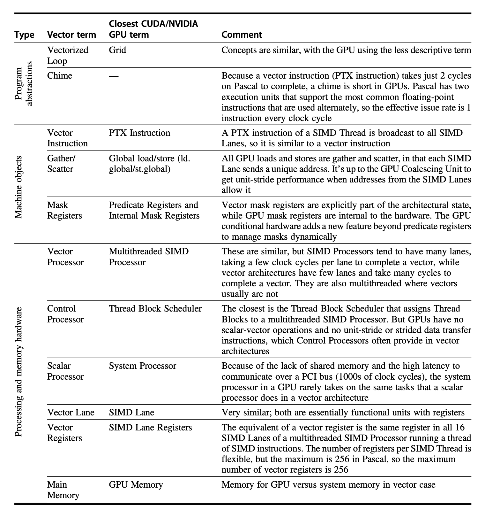
下图为 4 通道的向量处理器和 GPU 上 4 SIMD 通道的多线程 SIMD 处理器：
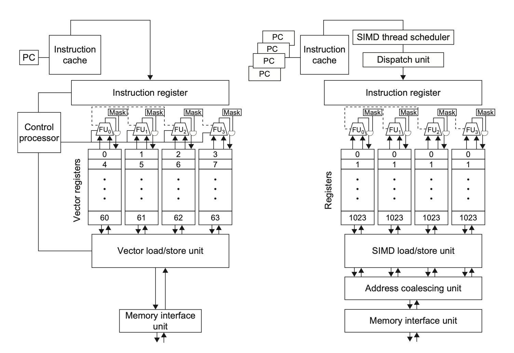
7. Compared GPU with Multimedia SIMD¶
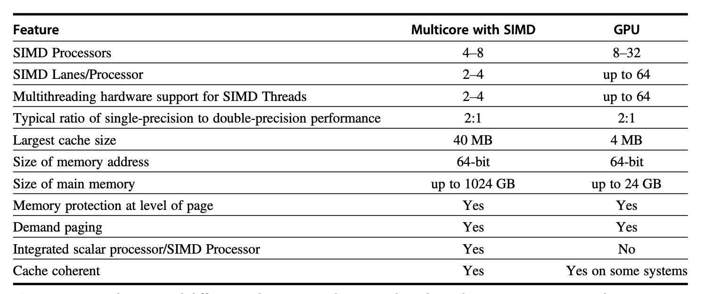
| 架构 | 程序员看到的抽象 | 适合的数据并行形式 | 特点 |
|---|---|---|---|
| Vector Architecture | 一条指令操作一整个 vector | 长向量、可变长度、规则或部分不规则访问 | vl、predicate、stride、gather-scatter 等机制 |
| Multimedia SIMD | 固定宽度 packed data | 短向量、固定长度数据块 | 适合 256-bit 这类短固定向量，省略很多向量机机制 |
| GPU | 大量 CUDA threads | 大规模线程并行和 SIMT 执行 | 需要协调 host/device、thread blocks、GPU memory 和分支发散 |
三种 DLP 架构的核心区别
- Vector Architecture 把“向量”作为指令级对象，硬件负责连续处理整段向量。
- Multimedia SIMD 把“固定宽寄存器”作为对象，一条指令处理少量 packed elements。
- GPU 把“线程”作为程序员可见对象，硬件再把线程组织成 SIMT / SIMD 风格执行。
4.4 Loop-Level Parallelism¶
Loop-Level Parallelism 研究循环不同迭代之间能否并行。
- 判断标准是是否存在 Loop-Carried Dependence（循环间数据依赖）。
for (int i = 999; i >= 0; i--)
x[i] = x[i] + s;
将循环展开，可以看到
x[999] = x[999] + s;
...
x[1] = x[1] + s;
x[0] = x[0] + s;
循环之间不存在数据依赖，因此容易并行化。
for (int i = 0; i < 100; i++)
A[i+1] = A[i] + C[i];
B[i+1] = C[i] + D[i];
将循环展开，可以看到存在数据依赖
- \(A[i+1]\) 的值需要通过 \(A[i]\) 得到，但 \(A[i]\) 是上一个循环计算得出的
A[1] = A[0] + C[0]
B[1] = C[0] + D[1]
A[2] = A[1] + C[1]
B[2] = C[1] + D[1]
循环间依赖可以通过改写来解决
A[0] = A[0] + B[0];
for (i = 0; i < 99; i++) {
B[i+1] = C[i] + D[i];
A[i+1] = A[i+1] + B[i+1];
}
B[100] = C[99] + D[99]; // 没有循环间依赖